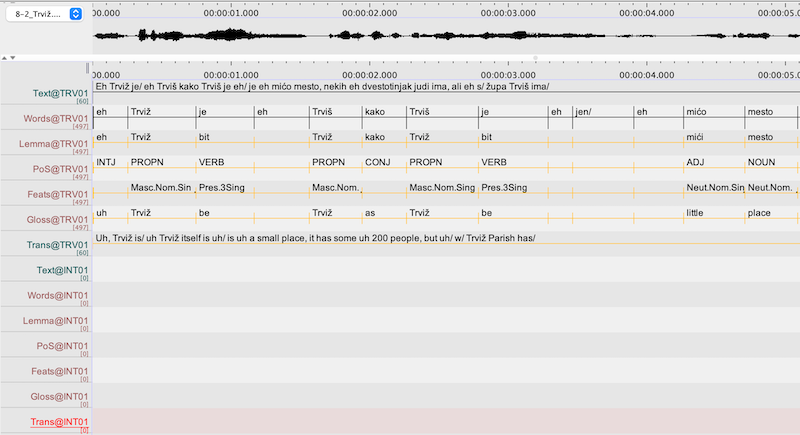

Chapter 5 Annotation
Annotators will receive an ELAN file (.eaf) containing a time-aligned transcription at the utterance and word levels, with all additional tiers already set up for the necessary annotations. ELAN files will be pre-tagged with annotations for frequent words, but these existing annotations should also be checked since homonyms may not be tagged correctly; please make sure that the annotation fits the context. Annotation instructions for the individual languages are given in the following sections.

5.1 Using ELAN to annotate audio
Annotators will be trained to use ELAN. It is usually most efficient to work in Interlinearization Mode (Options > Interlinearization Mode), but if you need to merge or split annotation fields, you can do this in Annotation mode (Annotation > Merge with next annotation, Merge with annotation before, Split annotation).
5.2 Lemmatization
A lemma is the “basic” form of the word, normally the citation form that is used as the head word in dictionary entries. Lemmas should be entered in the Lemma tier for each corresponding form on the Words tier. You do not need to enter lemmas for fillers like “uh”, “um” (whatever their form in the individual languages) that simply indicate hesitation and have no real meaning.
Lemmas are written using the transcription conventions for the individual variety. Proper nouns are capitalized, but other forms are in lower case. (Examples below are in italics, to set them off from the rest of the text, but in ELAN everything will be in plain text, without this formatting.)
5.2.1 Čakavian
The citation forms used as lemmas are as follows:
for nouns: nominative singular. For example, the lemma for the word-form vuci ‘wolves’ is vuk)
for pronouns: nominative singular (masculine, if the form is a pronominal modifier). For example, the lemma for ga ‘him’ (3Sing.Masc.Gen-Acc) is on ‘he’; the lemma for tu ‘that’ (Fem.Acc.Sing) is taj.
for adjectives: nominative singular masculine indefinite (or definite, if a distinct indefinite form is not used/does not exist). For example, the lemma for dobre ‘good’ (Fem.Gen.Sing) is dobar. For regular comparative and superlative forms, use the positive degree as the lemma. For (semi-)suppletive comparative/superlative forms, both the suppletive comparative degree and the positive degree should be listed. For example, the lemma for topliji ‘warmer’ is topao, and the lemma for najbolji ‘best’ is dobar|bolji.
for adverbs: even though most adverbs are formed regularly from adjectives, they should be lemmatized as adverbs (e.g., dobro ‘good’, and not dobar)
for verbs: infinitive. If the variety being transcribed normally has infinitives in -t or -ć (without the final -i; e.g., kantat ‘to sing’), then this is the form that you should use for the lemma. If it is not clear whether the form represents a code-switch to standard Croatian/štokavian, you may list both forms, separated by a vertical pipe; e.g., isticat|isticati ‘to emphasize’. For verbs that only occur with se, the se should be included in the lemma, even though the verb and the reflexive pronoun are treated as separated words in the transcription; e.g., Pres.1Plur družimo would be lemmatized as družit se ‘to socialize’.
The verb ‘go’ is suppletive and can be analyzed in different ways. Individual dialects may also vary in their usage, so any generalized treatment of these forms is necessarily imperfect. We will use the perfective infinitive poć|pojt as the lemma for the imperfective present gren, greš, gre etc. as well as the less frequent perfective present forms pojden/pojen, pojdeš/poješ, etc. The corresponding past participle forms are ša(l), šla, etc. The verb poć commonly has suppletive imperative forms taken from the verb hodit ‘walk; go’, but since this verb has a complete, regular paradigm, the imperative forms hodi/hoj, hodimo/homo, hodite/hote are lemmatized as hodit.
In some instances, there are variant forms of lemmas that are used interchangeably (e.g., kad and kada when). In other cases, it may not be clear what the phonological form of the lemma is in a given variety, based on the form that occurs in the interview (e.g., present tense mislin could correspond to an infinitive mislit or mislet; since there is variation in the reflexes of jat’ in some forms within individual dialects, there may be no way to be sure what the “correct” form is). In these cases, both variants should be listed, separated by a vertical pipe |; e.g., kad|kada. The same applies to the forms of certain pronouns, which may vary across and within dialects; e.g., ov|ovi ‘this’, ta|ti ‘that’. The inclusion of variant forms of a lemma does not mean that those variants are all used in the given dialect.
5.2.3 Istro-Romanian
The citation forms used as lemmas are as follows:
for nouns: singular indefinite. For example, the lemma for the word-form ånu ‘the year’ is ån and the lemma for the word form dinci ‘the teeth’ is dinte.
for pronouns: the singular stressed nominative form of a pronoun (masculine, if the form is a pronominal modifier and shows agreement). For example, the lemma for me ‘me’ (Prs.1Sing.Acc) is jo ‘I’; the lemma for mę ‘my, mine’ (Poss.1Sing.Fem.Sing) or melj ‘my, mine’ (Poss.1Sing.Masc.Plur) is me. The different forms of the third person pronoun are treated as separate lemmas: je ‘he’, jå ‘she’, jelj ‘they’ (Masc), jåle ‘they’ (Fem). Thus, the lemma for o ‘her’ (Prs.Fem.3Sing.Acc) is jå; the lemma for âlj ‘him’ (Prs.Masc.3Sing.Dat) is je.
for modifiers (adjectives, determiners) that agree with nouns: the masculine singular form. For example, the lemma for bure ‘good’ (Fem.Plur) is bur; the lemma for čelji ‘those’ (Masc.Nom-Acc.Plur) is čela.
for adverbs: same as the word form.
for verbs: the infinitive. For verbs that occur with the reflexive pronoun se, the se should be included in the lemma, even though the verb and the reflexive pronoun are written as separate words in the transcription. For example, for avdu in jo me avdu (Pres.1sg) ‘I feel (myself)’, the lemma is avzi se.
In some instances, there are variant forms of lemmas that are used interchangeably; e.g., kân and kând ‘when’. In these cases, both variants are listed, separated by a vertical pipe; e.g., kân|kând.
5.2.4 Istro-Venetian and Fiuman
The citation forms used as lemmas are as follows:
for nouns: singular. For example, the lemma for the word-form taliani ‘Italians’ is talian.
for pronouns: the singular stressed form of a pronoun (masculine, if the form is a pronominal modifier and shows agreement). For example, the lemma for me ‘me’ (Prs.1Sing.Dat-Acc) is mi ‘I’; the lemma for mia ‘my, mine’ (Poss.1Sing.Fem.Sing) or mii ‘my, mine’ (Poss.1Sing.Masc.Plur) is mio. The different forms of the third person pronoun are treated as separate lemmas: lui ‘he’, ela ‘she’, lori ‘they’ (Masc.), lore ‘they’ (Fem.). Thus, the lemma for la ‘she/her’ (Prs.Fem.3Sing.Nom-Acc) is ela; the lemma for ghe ‘her, him, them’ (Prs.Masc-Fem.3Sing-Plur.Dat) is lui|ela|lori|lore.
for modifiers (adjectives, determiners) that agree with nouns: singular masculine. For example, the lemma for pici ‘small’ (Masc.Plur) is picio; the lemma for questa ‘this’ (Fem.Sing) is questo.
for adverbs: same as the word form. Suppletive comparative or superlative forms are lemmatized with both the positive degree and the suppletive form. For example, the lemma for meio ‘better, best’ is ben|meio.
for verbs: infinitive. For verbs that only occur with the reflexive pronoun se, the se should be included in the lemma, even though the verb and the reflexive pronoun are usually written as separate words in the transcription. For example, for se divertimo ‘we’re having fun’, the lemma is divertirse.
In some instances, there are variant forms of lemmas that are used interchangeably; e.g., per and par ‘for’. In these cases, both variants should be listed, separated by a vertical pipe; e.g., per|par.
5.4 Morphosyntactic features
Morphosyntactic features (e.g., number, gender, case, tense) are given in the Feats tier for each individual word (where relevant).
As with the POS tags, this corpus uses a slightly modified version of the Universal Dependencies (UD) feature inventory. In particular, some tags have been changed to make all POS and morphosyntactic feature tags distinct (e.g., UD uses PART for “particle” and Part for “participle”); a few new tags have been added where there is no simple UD equivalent; and features that are considered the default value (e.g., indicative mood for verbs, positive degree for adjectives) are not specified, to simplify the annotations. We also differ from UD in that no features are treated as Boolean values; e.g., rather than marking possessive pronouns as Prs (personal) | Poss = Yes, we simply mark them as Poss (Prs is understood for all possessive pronouns). Labels that are different from those in the UD inventory are shown in green.
The first letter of the labels for morphosyntactic features is capitalized, and different features are separated by a period. Features should be listed in the order shown in the tables below. The abbreviations are mainly self-explanatory, but an alphabetic list of abbreviations is given at the end.
Since the different languages have different grammatical systems, separate tables are given by language.
5.4.1 Čakavian
Note that we do not code definiteness or indefiniteness for adjectives, since this is not readily apparent in many instances. We do not use the pronoun type “clitic” to distinguish between clitic (unstressed) and full (stressed) pronominal forms; for some pronouns the forms are otherwise phonologically identical (e.g., Gen-Acc nȁs vs. nas), and the behavior of clitics in Čakavian is different from closely related Štokavian varieties, so we do not want to impose an analysis here. We also do not code for animacy, because this should be clear from the meaning and form of the noun (and any associated modifiers). Unlike the UD practices for some Slavic treebanks, we do code aspect, but these labels are presumptive, based on the context and on morphological features of the verbs in question; without a detailed study of the aspectual usage in individual varieties, we cannot be certain in all instances that these are correct. Only perfective (Pfv) aspect is marked overtly (see below).
Other differences from UD (indicated in green in the table below):
For some parts of speech, certain feature values are considered the default value and are unmarked (e.g., positive degree for adjectives, imperfective aspect for verbs)
In some instances, abbreviations have been changed to make them unique (e.g., UD specifies Imp as the abbreviation for both imperative mood and imperfective aspect) or to conform to widely used standard terminology (e.g., Coll “collective” for collective numerals, rather than “Sets” in UD)
Abbreviations have been added for categories not included in UD
| POS | Features |
|---|---|
| ADJ | Degree: (positive is unmarked), Cmp, Sup Gender: Masc, Fem, Neut Case: Nom, Gen, Dat, Acc, Ins, Loc, Voc Number: Sing, Plur, Pauc (Definiteness: not marked) |
| ADP | — |
| ADV | Degree: (positive is unmarked), Cmp, Sup |
| AUX | Tense/Mood: Pres, Pfv.Pres, Aor, Impf, Cnd Person/Number: 1Sing, 2Sing, 3Sing, 1Plur, 2Plur, 3Plur |
| CONJ | — |
| DET | pronoun type and other features as relevant (see below). In addition to the types under PRON below, less commonly used pronoun types are Exc and Emp for exclamative and emphatic determiners. |
| INTJ | — |
| NOUN (NAME, PROPN) | Type: Coll, Dim Gender: Masc, Fem, Neut Case: Nom, Gen, Dat, Acc, Ins, Loc, Voc Number: Sing, Plur, Pauc |
| NUM | Type: Card, Ord, Coll (Plus gender, case, number features where relevant) |
| PART | The question marker li has the feature specification Q and is not translated; no features are marked for other particles |
| PRON | Type: Dem, Ind, Int, Neg, Poss, Prs, Refl, Rel, Tot (Plus person, number, gender, case features as relevant. |
| VERB | Aspect: (imperfective or bi-aspectual verbs are unmarked), Pfv Mood: (indicative is unmarked), Imp Tense: Pres, Past, Aor, Impf Person/Number: 1Sing, 2Sing, 3Sing, 1Plur, 2Plur, 3Plur Voice: (active is unmarked), Pass Type: (finite is unmarked), Inf, Ptcp, Conv (For participles: also gender, case, number agreement features as relevant. These specifications follow the type Ptcp.) |
Additional notes and examples
Relevant features should be listed in the same order as in the preceding table; e.g.,
| example | POS | features | meaning |
|---|---|---|---|
| dobroga | ADJ | Masc.Gen.Sing (or Neut.Gen.Sing) | good |
| najboljega | ADJ | Sup.Masc.Gen.Sing (or Neut.) | best |
| dobreh/dobrih | ADJ | Gen.Plur | good |
| ribi | NOUN | Fem.Gen.Sing | fish |
| dali | VERB | Pfv.Past.Ptcp.Masc.Plur | give |
| govorin | VERB | Pres.1Sing | speak, say |
For adjectives and determiners, the oblique plural forms typically do not vary by gender. Although the gender can be inferred from the context, it does not need to be specified when there are no differences in form.
Paucal number refers to the special forms used after the numerals 2, 3, 4; e.g., in the phrase dva brata ‘two brothers”, brata is Masc.Pauc (there are no case distinctions for paucal forms; e.g., s dva brata ’with two brothers’)
Definitions and examples of pronoun types (specified for the parts of speech DET and PRON):
Dem: demonstrative pronouns (e.g., ov|ovi ‘this’)
Ind: indefinite pronouns (e.g., neč ‘something’, neki ‘someone; some [kind of]’)
Int: interrogative pronouns (e.g., ča ‘what’, ki ‘who’)
Neg: negative indefinite pronouns (e.g., nič ‘nothing’, niki ‘nobody’)
Poss: possessive pronouns (e.g., moj ‘my’, njegov ‘his’, etc.)
Prs: personal pronouns (e.g., ja ‘I’, ti ‘you(sg)’, on ‘he’, etc.)
Refl: reflexive (also reciprocal) pronoun (sebe ‘oneself’; inflects for case, but gender, person, number are not specified; can refer to any subject)
Rel: relative pronouns (e.g., ki ‘who, which’, ča ‘that’)
Tot: total pronouns (e.g., sva/sa ‘all’, sve ‘everything’)
Less frequent in our data are emphatic (Emp.) or exclamative (Exc.) uses of determiners. The form sam, which frequently functions as an adjective (e.g., ona j bila sama ‘she was alone’), can also be used emphatically (on sam je to udelal ‘he did that himself’). In the interview context, exclamatives rarely occur (e.g., Kakov gnjusni bakulina! ’What a disgusting big cockroach!“).
For personal and possessive pronouns, the person/number are specified as for verbs (e.g., 1Sing, 2Plur), immediately following the pronoun type. For 3rd person pronouns, the gender of the pronoun is specified before the person and number. Case is specified following number. Note that this is different from the order used for nouns and adjectives (gender, case, number). Possessive pronouns are specified for the person and number of the possessor, followed by the agreement features (gender, case, number) of the possessed object. For 3Sing possessive pronouns, the gender of the possessor must also be specified.
The clitic pronoun se is tagged as Refl.Acc in all contexts. In addition to indicating a true reflexive or reciprocal meaning, it also is used to create intransitives and impersonal passives.
Examples of feature specifications for determiners and pronouns:
| example | POS | features | meaning |
|---|---|---|---|
| mi | PRON | Prs.1Plur.Nom | we |
| mi | PRON | Prs.1Sing.Dat | I |
| moja | DET | Poss.1Sing.Fem.Nom.Sing | my |
| ona | PRON | Prs.Fem.3Sing.Nom | she |
| njen | DET | Poss.Fem.3Sing.Masc.Nom.Sing | her |
| ona | DET | Dem.Fem.Nom.Sing | that |
5.4.3 Istro-Romanian
We code for the feature Def (definite) in nouns, except for feminine singular forms. In the Zheyanski variety of Istro-Romanian, there is no overt distinction between indefinite and definite feminine singular nouns. In the Vlashki variety, there can be a distinction between indefinite and definite forms of feminine singular nouns (e.g., fętę ‘[a] girl’, fęta ‘[the] girl’). However, there is intra- and inter-speaker variation in the formal marking of this feature, and typically, only one (originally, definite) form is used in both meanings. Because of this variation, we do not mark the feature Def on any feminine singular nouns.
Some masculine adjectives can carry a postposed definite article -le, but this is infrequent. The feature Def is only marked for masculine adjectives when this overt suffix is present.
In the Vlashki variety of Istro-Romanian, nouns are normally not marked morphologically for case, with the exception of some vocative forms. In the Zheyanski variety, case marking is more frequent but is not consistently used. Consequently, we do not specify case for nouns unless there is some overt morphological marking (e.g., baba ‘old woman’, babe Sing.Dat, babo Sing.Voc).
For pronouns, both stressed/full pronouns and unstressed/clitic pronouns have the property of morphological case. When the same form is used for different cases, we disambiguate and mark the case according to the context; e.g., noj ‘we’ (Prs.3Sing.Nom or Prs.3Sing.Acc).
We do not code for the pronoun type “clitic” to distinguish between clitic and full forms of pronouns.
We code verbal aspect, but without a detailed study of the aspectual usage in individual varieties, we cannot be certain in all instances that the analysis is correct. Istro-Romanian expresses verbal aspect (perfective and imperfective/iterative/habitual) through morphology. We mark the perfective aspect (Pfv) but only when it is expressed by a prefix, e.g. po- in posurbi (Pfv) ‘slurp (up)’), or by the use of a suppletive prefixed perfective verb borrowed from Čakavian (Croatian), e.g. popi (Pfv) ‘drink (up)’.
Other differences from UD (indicated in green in the table below):
For some parts of speech, certain feature values are considered the default value for the purpose of coding (e.g., finite and indicative forms of verbs; imperfective aspect, etc.).
In some instances, abbreviations have been changed to make them unique (e.g., UD specifies Imp as the abbreviation for both imperative mood and imperfect tense; we use Imp for imperative and Impf for imperfect).
| POS | Features |
|---|---|
| ADJ | (Degree: not marked since comparison is expressed periphrastically) Gender: Masc, Fem, Neut Number: Sing, Plur |
| ADP | — |
| ADV | (Degree: not marked since comparison is expressed periphrastically) |
| AUX | Type: (finite is unmarked), Inf, Ptcp Tense: Pres Mood: (indicative is unmarked) Cnd, Imp, Sub (verb fi ‘to be’ only) Person/Number: 1Sing, 2Sing, 3Sing, 1Plur, 2Plur, 3Plur |
| CCONJ | — |
| DET | Marked for pronoun type and other features as relevant (see below). In addition to the types under PRON below, the pronoun type Art is used only for determiners, with the features Def, Ind. Less commonly used pronoun types are Exc and Emp for exclamative and emphatic determiners. |
| INTJ | — |
| NOUN (NAME, PROPN) | Definiteness: (indefinite is unmarked), Def Gender: Masc, Fem, Neut Number: Sing, Plur Case: Nom-Acc, Gen-Dat, Voc |
| NUM | Type: Card, Ord Gender: Masc, Fem (for the cardinal numeral ‘one’ and for ordinal numerals) Number: Sing, Plur (for ordinal numerals) |
| PART | — |
| PRON | Type: Dem, Ind, Int, Neg, Poss, Prs, Refl, Rel, Tot Person/Number: 1Sing, 2Sing, 3Sing, 1Plur, 2Plur, 3Plur Gender: Masc, Fem, Neut Case: Nom, Gen-Dat, Acc |
| SCONJ | — |
| VERB | Aspect: (imperfective/iterative/habitual is unmarked), Pfv Type: (finite is unmarked) Inf, Ptcp, Conv Tense: AntFut, Impf, Pres Mood: (indicative is unmarked), Imp Person/Number: 1Sing, 2Sing, 3Sing, 1Plur, 2Plur, 3Plur (For participles: also gender, number features when used as verbal adjectives) |
Additional notes and examples
Relevant features should be listed in the same order as in the preceding table; e.g.,
| example | POS | features | meaning |
|---|---|---|---|
| bure | ADJ | Fem.Plur | good |
| ręš | AUX | Cnd.2Sing | (you) would |
| ac | AUX | Pres.2Plur | (you) have |
| omu | NOUN | Def.Masc.Sing.Nom-Acc (definiteness, gender, number, case) | the man |
| muljerljei | NOUN | Def.Fem.Plur.Gen-Dat | (of/to) the women |
| Pula | PROPN | Fem.Sing | Pula |
| mire | PRON | Prs.1Sing.Acc | me |
| fakure | VERB | AntFut.3Sing (tense, person, number) | (if/when) he/she makes (it) |
| fakuta | VERB | Ptcp.Fem.Sing (type, gender, number) | done |
| posurbita | VERB | Pfv.Ptcp.Fem.Sing (aspect, type, gender, number) | slurped |
Definitions and examples of pronoun types (specified for the parts of speech DET and PRON):
Art: articles (un ‘a’ [Masc], o ‘a’ [Fem])
Dem: demonstrative pronouns (e.g., česta ‘this’, čela ‘that’)
Ind: indefinite pronouns (e.g., nuštire ‘someone’)
Int: interrogative pronouns (e.g., če ‘what’, čire ‘who’)
Neg: negative indefinite pronouns (e.g., ničur ‘no one’ [Masc.], ničo ‘no one’ [Fem])
Poss: possessive pronouns (e.g., mę ‘my’ [Fem.Sing], nostri ‘our’ [Masc.Plur])
Prs. personal pronouns (e.g., jo ‘I’, tu ‘you [Sing]’, je ‘he’)
Refl: reflexive (or reciprocal) pronouns (e.g., me ‘myself’, ve ‘yourself [Plur]’)
Rel: relative pronouns (e.g., cåra ‘who, which’ [Fem.Sing])
Tot: total pronouns (e.g., tot ‘all’, toc ‘all’ [Masc.Plur])
For personal and possessive pronouns, the person/number are specified as for verbs (e.g., 1Sing, 2Plur), immediately following the pronoun type. For 3rd person pronouns, the gender of the pronoun is specified after the person and number, followed by case (when relevant). For possessive pronouns, the gender and number for the possessed noun is specified after the person and number for the possessor.
The clitic pronoun se is tagged as Refl in all contexts. In addition to indicating a true reflexive or reciprocal meaning, it is also used to create impersonal and passive forms.
Examples of feature specifications for determiners and pronouns:
| example | POS | features | meaning |
|---|---|---|---|
| un | DET | Art.Ind.Masc.Sing (type, definiteness, gender, number) | a |
| jelj | PRON | Prs.3Plur.Masc.Nom-Acc (type, person and number, gender, case) | they, them |
| tije | PRON | Prs.2Sing.Dat | (to) you |
| ljej | PRON | Prs.3Sing.Fem.Dat | (to) her |
| mę | DET | Poss.1Sing.Fem.Sing (type, person and number [possessor], gender, number [possessum]) | my |
| telj | DET | Poss.2Sing.Masc.Plur | your |
| čelorę | DET | Dem.Masc.Plur.Gen-Dat (type, gender, number, case) | (of/to) those |
| kåre | DET | Int.Fem.Sing | which |
| če | PRON | Int | what |
5.4.4 Istro-Venetian and Fiuman
We do not use the pronoun type “clitic” to distinguish between clitic and full forms of pronouns.
With personal pronouns, the full, stressed forms are not marked for case, since the forms are identical in all contexts; e.g., lui ‘he, him’ (Prs.Masc.3Sing).
For unstressed pronouns, case is marked. When the same form is used for different cases, we mark the case according to the context; e.g., la ‘she’ (Prs.Fem.3Sing.Nom or Prs.Fem.3Sing.Acc).
Other differences from UD (indicated in green in the table below):
For some parts of speech, certain feature values are considered the default value and are unmarked (e.g., positive degree for adjectives or finite forms of verbs)
In some instances, abbreviations have been changed to make them unique (e.g., UD specifies Imp as the abbreviation for both imperative mood and imperfect tense) or more widely used terms have been adopted (e.g., the verb form specification Ger “gerund” is deprecated in UD, but this is the standard term in Italian grammar. The gerund is used to form progressive tenses (with the AUX star) or functions as a converb (verbal adverb)).
Abbreviations have been added for categories not included in UD
| POS | Features |
|---|---|
| ADJ | Degree: (positive is unmarked), Cmp (for irregular, synthetic comparative forms), Sup (for absolute superlatives) Gender: Masc, Fem Number: Sing, Plur |
| ADP | — |
| ADV | Degree: (positive is unmarked), Cmp (for irregular, synthetic comparative forms), Sup (for absolute superlatives) |
| AUX | Type: (finite is unmarked), Inf, Ptcp, Ger Tense: Pres, Past, Fut, Impf Mood: (indicative is unmarked) Sub, Cnd, Imp Person/Number: 1Sing, 2Sing, 3Sing, 1Plur, 2Plur, 3Plur |
| CONJ | — |
| DET | pronoun type and other features as relevant (see below). In addition to the types under PRON below, the pronoun type Art is used only for determiners, with the features Def, Ind. Less commonly used pronoun types are Exc and Emp for exclamative and emphatic determiners. |
| INTJ | — |
| NOUN (NAME, PROPN) | Gender: Masc, Fem Number: Sing, Plur |
| NUM | Type: Card, Ord Gender: Masc, Fem (for the cardinal numeral ‘one’ and for ordinal numerals) Number: Sing, Plur (for ordinal numerals) |
| PART | — |
| PRON | Type: Dem, Ind, Int, Neg, Poss, Prs, Refl,Rel, Tot (Plus person, number, gender, case features as relevant.) |
| VERB | Type: (finite is unmarked) Inf, Ptcp, Ger Tense: Pres, Past, Fut, Impf Mood: (indicative is unmarked), Sub, Cnd, Imp Person/Number: 1Sing, 2Sing, 3Sing, 1Plur, 2Plur, 3Plur (For participles: also gender, number features as for adjectives) |
Additional notes and examples
Relevant features should be listed in the same order as in the preceding table; e.g.,
| example | POS | features | meaning |
|---|---|---|---|
| Roma | PROPN | Fem.Sing | Rome |
| meio | ADJ | Cmp.Masc.Sing | better |
| magneria | VERB | Cnd.Pres.1Sing | I would eat |
| andado | Ptcp.Masc.Sing | ||
| portameli | VERB+PRON+PRON | Imp.2Sing+Prs.1Sing.Dat+Prs.Masc.3Plur.Acc | bring them to me! |
Definitions and examples of pronoun types (specified for the parts of speech DET and PRON):
Art: articles (un ‘a’, el ‘the’)
Dem: demonstrative pronouns (e.g., questo ‘this’, quel ‘that’)
Ind: indefinite pronouns (e.g., qualchedun ‘someone’, qualche ‘some’)
Int: interrogative pronouns (e.g., cossa ‘what’, qualche ‘which’)
Neg: negative indefinite pronouns (e.g., niente ‘nothing’)
Poss: possessive pronouns (e.g., mio ‘my’, suo ‘his/hers’, etc.)
Prs: personal pronouns (e.g., mi ‘I’, tu ‘you(sg)’, lui ‘he’, etc.)
Refl: reflexive (also reciprocal) pronoun se ‘himself/herself/themselves’; for the first and second persons, the object forms of the personal pronouns are also used as reflexive forms and should be tagged as Refl in this context
Rel: relative pronouns (e.g., che ‘who, which, that’)
Tot: total pronouns (e.g., tuto ‘all’, tuti ‘everyone’)
Less frequent in our data are emphatic (Emp.) or exclamative (Exc.) uses of determiners. The form stesso can be used together with a pronoun for emphasis (e.g., go fato mi stesso ‘I did it myself’). In the interview context, exclamatives rarely occur (e.g., Che bela casa! ’What a beautiful house!“).
For personal and possessive pronouns, the person/number are specified as for verbs (e.g., 1Sing, 2Plur), immediately following the pronoun type. For 3rd person pronouns, the gender of the pronoun is specified before the person and number, followed by case (when relevant). For possessive pronouns, the number and gender for the possessed noun is specified after the person and number for the possessor.
The clitic pronoun se is tagged as Refl in all contexts. In addition to indicating a true reflexive or reciprocal meaning, it also is used to create impersonal and passive forms.
Examples of feature specifications for determiners and pronouns:
| example | POS | features | meaning |
|---|---|---|---|
| el | DET | Art.Def.Masc.Sing | the |
| lui | PRON | Prs.Masc.3Sing | he |
| lo (go visto) | PRON | Prs.Masc.3Sing.Acc | him |
| mia | DET | Poss.1Sing.Fem.Sing | my |
| ela | PRON | Prs.Fem.3Sing | she |
| suo | DET | Poss.3Sing.Masc.Sing | his, her |
| queste | DET | Dem.Fem.Plur | those |
| cossa | PRON | Int | what |
| qualchedun | PRON | Ind.Masc.Sing | someone |
| tuti | DET | Tot.Masc.Plur | all |
5.5 Language contact phenomena
In order to identify possible language contact phenomena of interest for future research (nonce borrowings, code-switches or language mixing), we include a special tier for each speaker in the ELAN files, labeled LC. Simply enter the letter y (for “yes”) if you think the word in question reflects some type of language contact. Established borrowings that are used by most/all speakers and that are considered part of the dialect do not need to be indicated; e.g., the use of Venetian borrowings such as anke, forši, etc. in čakavian dialects.
5.6 Translation and glosses
The corpus will include a free translation of the individual utterances. Slavic varieties will be translated into English, and Romance varieties into English and Croatian.
5.6.1 Čakavian {čakavian-translation}
Some verbs have different meanings when used with reflexive se. While the verbs will be lemmatized without se if they can also be used transitively, the specific meaning should be indicated in the gloss, preceded by (se) in parentheses. For example, Lemma: štimat, Gloss: ‘(se) be proud (of)’. Although rodit se has the predictable passive meaning ‘be born’, in English the translation of the less common transitive form is ‘give birth to’, so the preferred gloss for the lemma rodit accompanied by se is ‘(se) be born’.